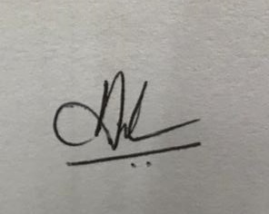

Infosys Wing, Center for Infectious Disease Research
Indian Institute of Science, C.V. Raman Avenue Bangalore 560012, Karnataka
Email: covidtest@iisc.ac.in
|
Infosys Wing, Center for Infectious Disease Research Indian Institute of Science, C.V. Raman Avenue Bangalore 560012, Karnataka Email: covidtest@iisc.ac.in |
|
| Report Date | {{ reportData.reportDate }} |
| Sample collection facility name: Collection cacility pin-code: |
|
| Date of onset of illness | |
| Specimen Collection Date | {{ reportData.sampleCollectionDate }} |
| Sample Received Date and Time | {{ reportData.sampleRcptDateTime }} |
| Condition of specimen received/ Quality on arrival | |
| Test report sent to (Doctor email ID) | |
| REPORTING DETAILS | |
| IISc Testing ID | {{ reportData.sampleIIScID }} |
| ICMR ID | {{ reportData.sampleICMRID }} |
| Sr. No. | Sample ID (Label) | Patient Name | Age (in years) | Gender | Specimen type | Date of Sample testing | 2019-nCov Test RESULT |
|---|---|---|---|---|---|---|---|
| 1. | {{ reportData.srfid }} | {{ reportData.patientName }} | {{ reportData.patientAge }} | {{ reportData.patientGender }} | {{ reportData.sampleType }} | {{ reportData.testDate }} | {{ reportData.testResult }} |
| Prepared  Mrs. Madhumol Jeevan |
Checked and Approved Dr. Satish Rao C, MBBS, CCDE |